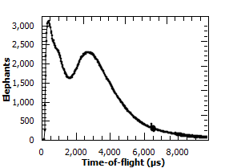

MatrixWorkspace#
This is a Python binding to the C++ class Mantid::API::MatrixWorkspace.
bases: mantid.api.ExperimentInfo, mantid.api.IMDWorkspace
A Matrix Workspace is a generic name for a family which contains measured (or derived) data (Y) with associated errors (E) and an axis (X) giving information about where the measurement was made. The Matrix Workspace forms a 2D structure, more details on this will be provided below. This is the most common structure for storing data in Mantid. This covers several more detailed workspace types including:
Workspace2D- A workspace for holding 2D, accumulated data in memory, this is the most commonly used to store histograms.EventWorkspace- A workspace that retains the individual neutron event data.
What information is in a Matrix Workspace#
All Matrix Workspaces contain one or more rows of data. A single row is formed of a set of arrays (Y, E, X). For example, the output of a single detector in a white-beam measuring wavelength would form a single row. In this scenario The x-axis (or “horizontal axis”) has units of length for wavelength, and Y would be the counts at each wavelength. The rows may have no correlation to each other. However, they are usually marked and sorted by some other attribute, such as detector number, or scattering angle. We call this row axis the “vertical axis”. Axis have Units.
Also they may contain:
Working with Matrix Workspaces in Python#
As alluded to above, Matrix Workspace is an abstraction. Matrix Workspace provides access to the majority of the common information for all 2D workspaces in its family, without needing to know all the details of how that data is actually stored.
Matrix Workspaces have all the data and operations of the base Workspace class, but add operations to access the 2D data itself a useful way.
Accessing Workspaces#
The methods for getting a variable to a Matrix Workspace is the same as shown in the Workspace help page.
If you want to check if a variable points to something that is a Matrix Workspace you can use this:
from mantid.simpleapi import *
from mantid.api import MatrixWorkspace
histoWS = CreateSampleWorkspace(WorkspaceType="Histogram")
if isinstance(histoWS, MatrixWorkspace):
print(histoWS.name() + " is a " + histoWS.id() + \
" and can be treated as a Matrix Workspace")
print("\nFor more Matrix Workspace types")
eventWS = CreateSampleWorkspace(WorkspaceType="Event")
svWS = CreateSingleValuedWorkspace()
tableWS = CreateEmptyTableWorkspace()
groupWS = GroupWorkspaces("histoWS,eventWS")
mdWS = CreateMDWorkspace(Dimensions=3, Extents='-10,10,-10,10,-10,10', Names='A,B,C', Units='U,U,U')
mdHistoWS=CreateMDHistoWorkspace(Dimensionality=2,Extents='-3,3,-10,10',SignalInput=range(0,100),ErrorInput=range(0,100),\
NumberOfBins='10,10',Names='Dim1,Dim2',Units='MomentumTransfer,EnergyTransfer')
myWorkspaceList = [histoWS,eventWS,svWS,tableWS,mdWS,mdHistoWS]
print("Is Matrix Workspace?\tType")
for ws in myWorkspaceList:
print("{0}\t{1}".format(isinstance(ws, MatrixWorkspace), ws.id()))
Output:
histoWS is a Workspace2D and can be treated as a Matrix Workspace
For more Matrix Workspace types
Is Matrix Workspace? Type
True Workspace2D
True EventWorkspace
True WorkspaceSingleValue
False TableWorkspace
False MDEventWorkspace<MDLeanEvent,3>
False MDHistoWorkspace
Matrix Workspace Properties#
# To find out the number of histograms in a workspace use getNumberHistograms()
print("number of histograms = {0}".format(ws.getNumberHistograms()))
# To find out the number of bins along the x-axis use blocksize()
print("number of bins = {0}".format(ws.blocksize()))
# To find out the bin containing a value use yIndexOfX()
print("bin index containing 502.2 for a histogram (0 by default) = {0}".format(ws.yIndexOfX(502.2)))
print("bin index containing 997.1 for histogram 272 = {0}".format(ws.yIndexOfX(997.1,272)))
# To find a workspace index from a spectrum number
print("workspace index for histogram 272 = {0}".format(ws.getIndexFromSpectrumNumber(272)))
# To get the Run Number use getRunNumber()
print("run number = {0}".format(ws.getRunNumber()))
Output:
number of histograms = 922
number of bins = 2663
bin index containing 502.2 for a histogram (0 by default) = 19
bin index containing 997.1 for histogram 272 = 39
workspace index for histogram 272 = 271
run number = 11015
Instrument#
You can get access to the Instrument for a workspace with
instrument = ws.getInstrument()
For the properties and operations of the instrument look at the Instrument help.
Run - to access logs, and other run information#
You can get access to the Run for a workspace with
run = ws.getRun()
For the properties and operations of the run object and how to access log data look at the Run.
Axes#
Axes are used primarily for labeling plots, but are also used as validation criteria for several algorithms. You can list out the axes of a workspace using the following code.
from mantid.simpleapi import CreateSampleWorkspace
ws = CreateSampleWorkspace()
for i in range(ws.axes()):
axis = ws.getAxis(i)
print("Axis {0} is a {1}{2}{3}".format(i,
"Spectrum Axis" if axis.isSpectra() else "",
"Text Axis" if axis.isText() else "",
"Numeric Axis" if axis.isNumeric() else ""))
unit = axis.getUnit()
print("\t caption:{0}".format(unit.caption()))
print("\t symbol:{0}".format(unit.symbol()))
Output:
Axis 0 is a Numeric Axis
caption:Time-of-flight
symbol:microsecond
Axis 1 is a Spectrum Axis
caption:Spectrum
symbol:
Setting the axisLabel
from mantid.simpleapi import CreateSampleWorkspace
ws = CreateSampleWorkspace()
axis = ws.getAxis(1)
# Create a new axis
axis.setUnit("Label").setLabel('Temperature', 'K')
unit = axis.getUnit()
print("New caption:{0}".format(unit.caption()))
print("New symbol:{0}".format(unit.symbol()))
Output:
New caption:Temperature
New symbol:K
Replacing the Axis
from mantid.api import NumericAxis
axis = ws.getAxis(1)
unit = axis.getUnit()
print("Old caption:{0}".format(unit.caption()))
print("Old symbol:{0}".format(unit.symbol()))
# Create a new axis
newAxis = NumericAxis.create(ws.getNumberHistograms())
newAxis.setUnit("Label").setLabel('Temperature', 'K')
# Set the vertical axis values
for idx in range(0, ws.getNumberHistograms()):
tempValue = idx*3+25 # some made up value
newAxis.setValue(idx, tempValue)
# Replace axis 1 with the new axis
ws.replaceAxis(1, newAxis)
axis = ws.getAxis(1)
unit = axis.getUnit()
print("New caption:{0}".format(unit.caption()))
print("New symbol:{0}".format(unit.symbol()))
print("New values: {0}".format(axis.extractValues()))
Output:
Old caption:Spectrum
Old symbol:
New caption:Temperature
New symbol:K
New values: [ 25. 28. ... 2785. 2788.]
Setting the Y Label

print(ws.YUnitLabel())
ws.setYUnitLabel("Elephants")
print(ws.YUnitLabel())
Output:
Counts
Elephants
Plotting#
You can specify the type of plot to be used when plotting a Matrix Workspace. The following plot types are available:
plot, marker, errorbar_x, errorbar_y, errorbar_xy. By default all Matrix Workspaces will be
treated as a plot type and this value will not auto-update or affect existing workspace plots. Changing the plot
type will affect the way the data is displayed. An example of the different plot types can be seen in mantid.plots.
Below is a simple example changing the plot type, a full example is available in the plotting gallery page.
print(ws.getPlotType())
ws.setPlotType("marker")
print(ws.getPlotType())
Output:
plot
marker
Setting Plot Marker
When plotting multiple marker workspaces it may be necessary to set the marker type for each workspace. If no marker is set, the default will be used from the Properties File. Marker style can be changed using the following code:
ws.setMarkerStyle("circle")
print(ws.getMarkerStyle())
Output:
circle
Matrix Workspace Operations#
# To create a copy of a workspace
wsClone = ws.clone()
# or
wsClone = CloneWorkspace(ws)
# To check if two variables point to the same workspace
if ws == wsClone:
print("They are the same workspace")
# To check if two workspaces have equal values
if ws.equals(wsClone, tolerance = 0.05):
print("They have the same data")
# To create a copy of a workspace
wsWavelength = ws.convertUnits(Target="Wavelength")
# or
wsWavelength = ConvertUnits(ws,Target="Wavelength")
# To rebin the workspace
ws = ws.rebin(Params = 200)
# or
ws = Rebin(ws, Params = 200)
# Mask detectors or spectra (or use the MaskDetectors algorithm
ws.maskDetectors(SpectraList=[2,3,4])
ws.maskDetectors(WorkspaceIndexList=range(101,105))
ws.maskDetectors(DetectorList=[150,160,170])
# To delete the workspace
ws.delete()
# or
DeleteWorkspace(wsClone)
# Do not access the python variable again as you will get a RuntimeError
# e.g. RuntimeError: Variable invalidated, data has been deleted.
Accessing Data#
A Matrix Workspace is essentially a 2D list of binned data where a workspace index, starting at 0, gives access to the data fields in each spectra.
The data is accessed using the x(), y() and e() commands. Each of these commands takes a number that refers to the index on the workspace and returns a list of the data for that workspace index, i.e
# Get the Y vector for the second row of data
y_data2 = ws.y(1)
for y in y_data2:
print(y)
# Or in loop access. Print the first value in all spectra
for index in range(0, ws.getNumberHistograms()):
#Note the round brackets followed by the square brackets
print(ws.y(index)[0])
There are more examples how to Extract and manipulate workspace data here.
Workspace algebra#
Matrix Workspaces can have algebraic operations applied to them directly without the need to call a specific algorithm, e.g. Plus
The expected operations of +,-,*,/ are supported with either a single number or another workspace as the second argument, e.g.
w1 = mtd['workspace1']
w2 = mtd['workspace2']
# Sum the two workspaces and place the output into a third
w3 = w1 + w2
# Multiply the new workspace by 2 and place the output into a new workspace
w4 = w3 * 2
It is also possible to replace one of the input workspaces using one of +=,-=,*=,/= e.g.
# Multiply a workspace by 2 and replace w1 with the output
w1 *= 2.0
# Add 'workspace2' to 'workspace1' and replace 'workspace1' with the output
w1 += w2
Other Information on Workspaces#
Workspace- Overview of workspaces, which include the following classes:MatrixWorkspace- A base class that contains among others:WorkspaceSingleValue - Holds a single number (and X & error value, if desired). Mainly used for workspace algebra, e.g. to divide all bins in a 2D workspace by a single value.
Workspace2D- A workspace for holding two dimensional data in memory, this is the most commonly used workspace.EventWorkspace- A workspace that retains the individual neutron event data.
TableWorkspace- A workspace holding data in rows of columns having a particular type (e.g. text, integer, …).WorkspaceGroup- A container for a collection of workspaces. Algorithms given a group as input run sequentially on each member of the group.
Reference#
- class mantid.api.MatrixWorkspace#
- YUnit((MatrixWorkspace)self) str :#
Returns the current Y unit for the data (Y axis) in the workspace
- YUnitLabel((MatrixWorkspace)self[, (bool)useLatex]) str :#
Returns the caption for the Y axis
- applyBinEdgesFromAnotherWorkspace((MatrixWorkspace)self, (MatrixWorkspace)ws, (int)getIndex, (int)setIndex) None :#
Sets the bin edges at setIndex to be the bin edges of ws at getIndex.
- applyPointsFromAnotherWorkspace((MatrixWorkspace)self, (MatrixWorkspace)ws, (int)getIndex, (int)setIndex) None :#
Sets the points at setIndex to be the points of ws at getIndex.
- axes((MatrixWorkspace)self) int :#
Returns the number of axes attached to the workspace
- binIndexOf((MatrixWorkspace)self, (float)xvalue[, (int)workspaceIndex]) int :#
Returns the index of the bin containing the given xvalue (deprecated, use
yIndexOfXinstead)
- blocksize((MatrixWorkspace)self) int :#
Returns size of the Y data array
- clearMonitorWorkspace((MatrixWorkspace)self) None :#
Forget about monitor workspace, attached to the current workspace
- clearOriginalWorkspaces((MDGeometry)self) None :#
Clear any attached original workspaces
- clone(InputWorkspace)#
Copies an existing workspace into a new one.
Property descriptions:
InputWorkspace(Input:req) Workspace Name of the input workspace. Must be a MatrixWorkspace (2D or EventWorkspace), a PeaksWorkspace or a MDEventWorkspace.
OutputWorkspace(Output:req) Workspace Name of the newly created cloned workspace.
- componentInfo((ExperimentInfo)self) mantid.geometry._geometry.ComponentInfo :#
Return a const reference to the
ComponentInfoobject.
- convertUnits(InputWorkspace, Target, EMode=None, EFixed=None, AlignBins=None, ConvertFromPointData=None)#
Performs a unit change on the X values of a workspace
Property descriptions:
InputWorkspace(Input:req) MatrixWorkspace Name of the input workspace
OutputWorkspace(Output:req) MatrixWorkspace Name of the output workspace, can be the same as the input
Target(Input:req) string The name of the units to convert to (must be one of those registered in the Unit Factory)[DeltaE, DeltaE_inFrequency, DeltaE_inWavenumber, dSpacing, dSpacingPerpendicular, Energy, Energy_inWavenumber, Momentum, MomentumTransfer, QSquared, SpinEchoLength, SpinEchoTime, TOF, Wavelength]
EMode(Input) string The energy mode (default: elastic)[Elastic, Direct, Indirect]
EFixed(Input) number Value of fixed energy in meV : EI (EMode=’Direct’) or EF (EMode=’Indirect’) . Must be set if the target unit requires it (e.g. DeltaE)
AlignBins(Input) boolean If true (default is false), rebins after conversion to ensure that all spectra in the output workspace have identical bin boundaries. This option is not recommended (see http://docs.mantidproject.org/algorithms/ConvertUnits).
ConvertFromPointData(Input) boolean When checked, if the Input Workspace contains Points the algorithm ConvertToHistogram will be run to convert the Points to Bins. The Output Workspace will contains Bins.
- dataDx((MatrixWorkspace)self, (int)workspaceIndex) numpy.ndarray :#
Creates a writable numpy wrapper around the original Dx data at the given index (deprecated, use
mutableDxinstead)
- dataE((MatrixWorkspace)self, (int)workspaceIndex) numpy.ndarray :#
Creates a writable numpy wrapper around the original E data at the given index (deprecated, use
mutableEinstead)
- dataX((MatrixWorkspace)self, (int)workspaceIndex) numpy.ndarray :#
Creates a writable numpy wrapper around the original X data at the given index (deprecated, use
mutableXinstead)
- dataY((MatrixWorkspace)self, (int)workspaceIndex) numpy.ndarray :#
Creates a writable numpy wrapper around the original Y data at the given index (deprecated, use
mutableYinstead)
- delete(Workspace)#
Removes a workspace from memory.
Property descriptions:
Workspace(Input:req) Workspace Name of the workspace to delete.
- detectorInfo((ExperimentInfo)self) mantid.geometry._geometry.DetectorInfo :#
Return a const reference to the
DetectorInfoobject.
- detectorSignedTwoTheta((MatrixWorkspace)self, (mantid.geometry._geometry.IDetector)det) float :#
Returns the signed two theta value for given detector
- detectorTwoTheta((MatrixWorkspace)self, (mantid.geometry._geometry.IDetector)det) float :#
Returns the two theta value for a given detector
- displayNormalization((IMDWorkspace)self) MDNormalization :#
Returns the visual
MDNormalizationof the workspace.
- displayNormalizationHisto((IMDWorkspace)self) MDNormalization :#
For MDEventWorkspaces returns the visual
MDNormalizationof derived MDHistoWorkspaces. For all others returns the same as displayNormalization.
- dx((MatrixWorkspace)self, (int)workspaceIndex) numpy.ndarray :#
Creates a read-only numpy wrapper around the Dx data at the given index. If
hasDxis False for this index, the Dx data is first initialized to zeros.
- e((MatrixWorkspace)self, (int)workspaceIndex) numpy.ndarray :#
Creates a read-only numpy wrapper around the E data at the given index
- equals((MatrixWorkspace)self, (MatrixWorkspace)other, (float)tolerance) bool :#
Performs a comparison operation on two workspaces, using the CompareWorkspaces algorithm
- estimateResolution((MDGeometry)self) numpy.ndarray :#
Returns a numpy array containing the width of the smallest bin in each dimension
- extractDx((MatrixWorkspace)self) object :#
Extracts (copies) the Dx data from the workspace into a 2D numpy array. Note: This can fail for large workspaces as numpy will require a block of memory free that will fit all of the data. Note: This will fail for ragged workspaces.
- extractE((MatrixWorkspace)self) object :#
Extracts (copies) the E data from the workspace into a 2D numpy array. Note: This can fail for large workspaces as numpy will require a block of memory free that will fit all of the data. Note: This will fail for ragged workspaces.
- extractX((MatrixWorkspace)self) object :#
Extracts (copies) the X data from the workspace into a 2D numpy array. Note: This can fail for large workspaces as numpy will require a block of memory free that will fit all of the data. Note: This will fail for ragged workspaces.
- extractY((MatrixWorkspace)self) object :#
Extracts (copies) the Y data from the workspace into a 2D numpy array. Note: This can fail for large workspaces as numpy will require a block of memory free that will fit all of the data. Note: This will fail for ragged workspaces.
- findY((MatrixWorkspace)self, (float)value[, (tuple)start=(0, 0)]) tuple :#
Find first index in Y equal to value. Start may be specified to begin at a specifc index. Returns tuple with the histogram and bin indices.
- getAxis((MatrixWorkspace)self, (int)axis_index) MantidAxis :#
Get a pointer to a workspace axis
- getBasisVector((MDGeometry)self, (int)index) mantid.kernel._kernel.VMD :#
Returns a
VMDobject defining the basis vector for the specified dimension
- getComment((Workspace)self) str :#
Returns the comment field on the workspace
- getDetector((MatrixWorkspace)self, (int)workspaceIndex) mantid.geometry._geometry.IDetector :#
Return the
DetectororDetectorGroupthat is linked to the given workspace index
- getDetectorIDToWorkspaceIndexMap((MatrixWorkspace)self, (bool)throwIfMultipleDets, (bool)ignoreIfNoValidDets) dict :#
Return a map where the key is detector ID (pixel ID), and the value at that index = the corresponding workspace index
- getDimension((MDGeometry)self, (int)index) mantid.geometry._geometry.IMDDimension :#
Returns the description of the
IMDDimensionat the given index (starts from 0). Raises RuntimeError if index is out of range.
- getDimensionIndexById((MDGeometry)self, (str)id) int :#
Returns the index of the
IMDDimensionwith the given ID. Raises RuntimeError if the name does not exist.
- getDimensionIndexByName((MDGeometry)self, (str)name) int :#
Returns the index of the dimension with the given name. Raises RuntimeError if the name does not exist.
- getDimensionWithId((MDGeometry)self, (str)id) mantid.geometry._geometry.IMDDimension :#
Returns the description of the
IMDDimensionwith the given id string. Raises ValueError if the string is not a known id.
- getEMode((ExperimentInfo)self) mantid.kernel._kernel.DeltaEModeType :#
Returns the energy mode.
- getGeometryXML((MDGeometry)self) str :#
Returns an XML representation, as a string, of the geometry of the workspace
- getHistory((Workspace)self) WorkspaceHistory :#
Return read-only access to the
WorkspaceHistory
- getIndexFromSpectrumNumber((MatrixWorkspace)self, (int)spec_no) int :#
Returns workspace index correspondent to the given spectrum number. Throws if no such spectrum is present in the workspace
- getIndicesFromDetectorIDs((MatrixWorkspace)self, (list)detID_list) mantid.kernel._kernel.std_vector_size_t :#
Returns a list of workspace indices from the corrresponding detector IDs.
- getInstrument((ExperimentInfo)self) mantid.geometry._geometry.Instrument :#
Returns the
Instrumentfor this run (deprecated, use the componentInfo/detectorInfo/spectrumInfo access layers).
- static getInstrumentFilename((str)instrument[, (str)date='']) str :#
Returns IDF filename
- getInstrumentName((ExperimentInfo)self) str :#
Return the name of the instrument for this experiment.
- getIntegratedCountsForWorkspaceIndices((MatrixWorkspace)self, (object)workspaceIndices, (int)numberOfWorkspaces, (float)minX, (float)maxX, (bool)entireRange) mantid.kernel._kernel.std_vector_dbl :#
Return a vector with the integrated counts within the given range for the given workspace indices
- getMarkerSize((MatrixWorkspace)self) float :#
Returns the marker size for the workspace
- getMarkerStyle((MatrixWorkspace)self) str :#
Return the marker style for the workspace
- getMaxNumberBins((MatrixWorkspace)self) int :#
Returns the maximum number of bins in a workspace (works on ragged data).
- getMemorySize((Workspace)self) int :#
Returns the memory footprint of the workspace in KB
- getMonitorWorkspace((MatrixWorkspace)self) Workspace :#
Return internal monitor workspace bound to current workspace.
- getNEvents((IMDWorkspace)self) int :#
Returns the total number of events, contributed to the workspace
- getNPoints((IMDWorkspace)self) int :#
Returns the total number of points within the workspace
- getName((Workspace)self) str :#
Returns the name of the workspace. This could be an empty string
- getNonIntegratedDimensions((MDGeometry)self) list :#
Returns the description objects of the non-integrated dimension as a python list of
IMDDimension.
- getNumDims((MDGeometry)self) int :#
Returns the number of dimensions present
- getNumNonIntegratedDims((MDGeometry)self) int :#
Returns the number of non-integrated dimensions present
- getNumberBins((MatrixWorkspace)self, (int)index) int :#
Returns the number of bins for a given histogram index.
- getNumberBins( (MatrixWorkspace)self) -> int :
Returns size of the Y data array (deprecated, use
blocksizeinstead)
- getNumberHistograms((MatrixWorkspace)self) int :#
Returns the number of spectra in the workspace
- getNumberTransformsFromOriginal((MDGeometry)self) int :#
Returns the number of transformations from original workspace coordinate systems
- getNumberTransformsToOriginal((MDGeometry)self) int :#
Returns the number of transformations to original workspace coordinate systems
- getOrigin((MDGeometry)self) mantid.kernel._kernel.VMD :#
Returns the vector of the origin (in the original workspace) that corresponds to 0,0,0… in this workspace
- getOriginalWorkspace((MDGeometry)self, (int)index) Workspace :#
Returns the source workspace attached at the given index
- getPlotType((MatrixWorkspace)self) str :#
Returns the plot type of the workspace
- static getResourceFilenames((str)prefix, (list)fileFormats, (list)directoryNames, (str)date) list :#
Compile a list of files in compliance with name pattern-matching, file format, and date-stamp constraints
Ideally, the valid-from and valid-to of any valid file should encapsulate the argument date. If this is not possible, then the file with the most recent valid-from stamp is selected
prefix: the name of a valid file must begin with this pattern fileFormats: list of valid file extensions directoryNames: list of directories to be searched date : the ‘valid-from’ and ‘valid-to ‘dates of a valid file will encapsulate this date (e.g ‘1900-01-31 23:59:00’)
returns : list of absolute paths for each valid file
- getRunNumber((ExperimentInfo)self) int :#
Returns the run identifier for this run.
- getSampleDetails((MatrixWorkspace)self) Run :#
Return the Run object for this workspace (deprecated, use
getRuninstead)
- getSignalAtCoord((MatrixWorkspace)self, (object)coords, (MDNormalization)normalization) object :#
Return signal for array of coordinates
- getSpecialCoordinateSystem((IMDWorkspace)self) mantid.kernel._kernel.SpecialCoordinateSystem :#
Returns the special coordinate system of the workspace
- getSpectrum((MatrixWorkspace)self, (int)workspaceIndex) ISpectrum :#
Return the spectra at the given workspace index.
- getSpectrumNumbers((MatrixWorkspace)self) list :#
Returns a list of all spectrum numbers in the workspace
- getTDimension((MDGeometry)self) mantid.geometry._geometry.IMDDimension :#
Returns the
IMDDimensiondescription mapped to time
- getTitle((Workspace)self) str :#
Returns the title of the workspace
- getXDimension((MDGeometry)self) mantid.geometry._geometry.IMDDimension :#
Returns the
IMDDimensiondescription mapped to X
- getYDimension((MDGeometry)self) mantid.geometry._geometry.IMDDimension :#
Returns the
IMDDimensiondescription mapped to Y
- getZDimension((MDGeometry)self) mantid.geometry._geometry.IMDDimension :#
Returns the
IMDDimensiondescription mapped to Z
- hasAnyMaskedBins((MatrixWorkspace)self) bool :#
Returns true if any of the bins in this workspace are masked.
- hasDx((MatrixWorkspace)self, (int)workspaceIndex) bool :#
Returns True if the spectrum uses the DX (X Error) array, else False.
- hasMaskedBins((MatrixWorkspace)self, (int)workspaceIndex) bool :#
Returns true if this spectrum contains any masked bins
- hasOriginalWorkspace((MDGeometry)self, (int)index) bool :#
Returns True if there is a source workspace at the given index
- id((DataItem)self) str :#
The string ID of the class
- instrumentDefaultAxis((ExperimentInfo)self) str :#
Return the axis the instrument view is wrapped around by default.
- instrumentDefaultView((ExperimentInfo)self) str :#
Return the name of the preferred view in instrument view.
- instrumentFilename((ExperimentInfo)self) str :#
Return the name of the file that the original IDF was from.
- instrumentValidFromDate((ExperimentInfo)self) mantid.kernel._kernel.DateAndTime :#
Return the valid-from
DateAndTimeof the instrument.
- instrumentValidToDate((ExperimentInfo)self) mantid.kernel._kernel.DateAndTime :#
Return the valid-to
DateAndTimeof the instrument.
- instrumentXmlText((ExperimentInfo)self) str :#
Return the instrument XML.
- isCommonBins((MatrixWorkspace)arg1) bool :#
Returns true if the workspace has common X bins.
- isCommonLogBins((MatrixWorkspace)arg1) bool :#
Returns true if the workspace has common X bins with log spacing.
- isDirty((Workspace)self[, (int)n]) bool :#
True if the workspace has run more than n algorithms (Default=1)
- isDistribution((MatrixWorkspace)self) bool :#
Returns the status of the distribution flag
- isGroup((Workspace)self) bool :#
Returns if it is a group workspace
- isHistogramData((MatrixWorkspace)self) bool :#
Returns
Trueif this is considered to be binned data.
- isMDHistoWorkspace((IMDWorkspace)self) bool :#
Returns True if this is considered to be binned data.
- isRaggedWorkspace((MatrixWorkspace)self) bool :#
Returns true if the workspace is ragged (has differently sized spectra).
- maskDetectors(Workspace, SpectraList=None, DetectorList=None, WorkspaceIndexList=None, MaskedWorkspace=None, ForceInstrumentMasking=None, StartWorkspaceIndex=None, EndWorkspaceIndex=None, ComponentList=None)#
An algorithm to mask a detector, or set of detectors, as not to be used. The workspace spectra associated with those detectors are zeroed.
Property descriptions:
Workspace(InOut:req) Workspace The name of the input and output workspace on which to perform the algorithm.
SpectraList(Input) int list A list of spectra to mask
DetectorList(Input) int list A list of detector ID’s to mask
WorkspaceIndexList(Input) unsigned int list A list of the workspace indices to mask
MaskedWorkspace(Input) MatrixWorkspace If given but not as a SpecialWorkspace2D, the masking from this workspace will be copied. If given as a SpecialWorkspace2D, the masking is read from its Y values.[]
ForceInstrumentMasking(Input) boolean Works when ‘MaskedWorkspace’ is provided and forces to use spectra-detector mapping even in case when number of spectra in ‘Workspace’ and ‘MaskedWorkspace’ are equal
StartWorkspaceIndex(Input) number If other masks fields are provided, it’s the first index of the target workspace to be allowed to be masked from by these masks, if not, its the first index of the target workspace to mask. Default value is 0 if other masking is present or ignored if not.
EndWorkspaceIndex(Input) number If other masks are provided, it’s the last index of the target workspace allowed to be masked to by these masks, if not, its the last index of the target workspace to mask. Default is number of histograms in target workspace if other masks are present or ignored if not.
ComponentList(Input) str list A list names of components to mask
- maskedBinsIndices((MatrixWorkspace)self, (int)workspaceIndex) mantid.kernel._kernel.std_vector_size_t :#
Returns all the masked bins’ indices at the workspace index.
hasMaskedBinsMUST be called first to check if any bins are masked, otherwise an exception will be thrown
- mutableDx((MatrixWorkspace)self, (int)workspaceIndex) numpy.ndarray :#
Creates a writable numpy wrapper around the Dx data at the given index. If
hasDxis False for this index, the Dx data is first initialized to zeros.
- mutableE((MatrixWorkspace)self, (int)workspaceIndex) numpy.ndarray :#
Creates a writable numpy wrapper around the E data at the given index. Raises a RuntimeError for
IEventWorkspace, since non-const access to E data is not possible for event data.
- mutableX((MatrixWorkspace)self, (int)workspaceIndex) numpy.ndarray :#
Creates a writable numpy wrapper around the X data at the given index
- mutableY((MatrixWorkspace)self, (int)workspaceIndex) numpy.ndarray :#
Creates a writable numpy wrapper around the Y data at the given index. Raises a RuntimeError for
IEventWorkspace, since non-const access to Y data is not possible for event data.
- name((DataItem)self) str :#
The name of the object
- numOriginalWorkspaces((MDGeometry)self) int :#
Returns the number of source workspaces attached
- populateInstrumentParameters((ExperimentInfo)self) None :#
Update parameters in the instrument-parameter map. Logs must be loaded before calling this method
- readDx((MatrixWorkspace)self, (int)workspaceIndex) numpy.ndarray :#
Creates a read-only numpy wrapper around the original Dx data at the given index (deprecated, use
dxinstead)
- readE((MatrixWorkspace)self, (int)workspaceIndex) numpy.ndarray :#
Creates a read-only numpy wrapper around the original E data at the given index (deprecated, use
einstead)
- readLock((DataItem)self) None :#
Acquires a read lock on the data item.
- readX((MatrixWorkspace)self, (int)workspaceIndex) numpy.ndarray :#
Creates a read-only numpy wrapper around the original X data at the given index (deprecated, use
xinstead)
- readY((MatrixWorkspace)self, (int)workspaceIndex) numpy.ndarray :#
Creates a read-only numpy wrapper around the original Y data at the given index (deprecated, use
yinstead)
- rebin(InputWorkspace, Params, PreserveEvents=None, FullBinsOnly=None, IgnoreBinErrors=None, UseReverseLogarithmic=None, Power=None, BinningMode=None)#
Rebins data with new X bin boundaries. For EventWorkspaces, you can very quickly rebin in-place by keeping the same output name and PreserveEvents=true.
Property descriptions:
InputWorkspace(Input:req) MatrixWorkspace Workspace containing the input data
OutputWorkspace(Output:req) MatrixWorkspace The name to give the output workspace
Params(Input:req) dbl list A comma separated list of first bin boundary, width, last bin boundary. Optionally this can be followed by a comma and more widths and last boundary pairs. Optionally this can also be a single number, which is the bin width. In this case, the boundary of binning will be determined by minimum and maximum TOF values among all events, or previous binning boundary, in case of event Workspace, or non-event Workspace, respectively. Negative width values indicate logarithmic binning.
PreserveEvents(Input) boolean Keep the output workspace as an EventWorkspace, if the input has events. If the input and output EventWorkspace names are the same, only the X bins are set, which is very quick. If false, then the workspace gets converted to a Workspace2D histogram.
FullBinsOnly(Input) boolean Omit the final bin if its width is smaller than the step size
IgnoreBinErrors(Input) boolean Ignore errors related to zero/negative bin widths in input/output workspaces. When ignored, the signal and errors are set to zero
UseReverseLogarithmic(Input) boolean For logarithmic intervals, the splitting starts from the end and goes back to the start, ie the bins are bigger at the start getting exponentially smaller until they reach the end. For these bins, the FullBinsOnly flag is ignored.
Power(Input) number Splits the interval in bins which actual width is equal to requested width / (i ^ power); default is linear. Power must be between 0 and 1.
BinningMode(Input) string Optional. Binning behavior can be specified in the usual way through sign of binwidth and other properties (‘Default’); or can be set to one of the allowed binning modes. This will override all other specification or default behavior.[Default, Linear, Logarithmic, ReverseLogarithmic, Power]
- replaceAxis((MatrixWorkspace)self, (int)axisIndex, (MantidAxis)newAxis) None :#
Replaces one of the workspace’s axes with the new one provided. The axis is cloned.
- run((ExperimentInfo)self) Run :#
Return the
Runobject. This cannot be modified, use mutableRun to modify.
- sample((ExperimentInfo)self) Sample :#
Return the
Sampleobject. This cannot be modified, use mutableSample to modify.
- setComment((Workspace)self, (str)comment) None :#
Set the comment field of the workspace
- setDistribution((MatrixWorkspace)self, (bool)newVal) None :#
Set distribution flag. If True the workspace has been divided by the bin-width.
- setDx((MatrixWorkspace)self, (int)workspaceIndex, (object)dX) None :#
Set Dx values from a python list or numpy array. It performs a simple copy into the array (deprecated, use
setSharedDxinstead)
- setE((MatrixWorkspace)self, (int)workspaceIndex, (object)e) None :#
Set E values from a python list or numpy array. It performs a simple copy into the array (deprecated, use
setSharedEinstead)
- setMarkerSize((MatrixWorkspace)self, (float)markerSize) None :#
Sets the size of the marker for the workspace
- setMarkerStyle((MatrixWorkspace)self, (str)markerType) None :#
Sets the marker type for the workspace
- setMonitorWorkspace((MatrixWorkspace)self, (object)MonitorWS) None :#
Set specified workspace as monitor workspace forcurrent workspace. Note: The workspace does not have to contain monitors though some subsequent algorithms may expect it to be monitor workspace later.
- setPlotType((MatrixWorkspace)self, (str)newType) None :#
Sets a new plot type for the workspace
Set the Dx data at the given index by building a new copy-on-write array from a python list or numpy array and sharing it into the workspace.
Set the E data at the given index by building a new copy-on-write array from a python list or numpy array and sharing it into the workspace.
Set the X data at the given index by building a new copy-on-write array from a python list or numpy array and sharing it into the workspace.
Set the Y data at the given index by building a new copy-on-write array from a python list or numpy array and sharing it into the workspace.
- setTitle((Workspace)self, (str)title) None :#
Set the title of the workspace
- setX((MatrixWorkspace)self, (int)workspaceIndex, (object)x) None :#
Set X values from a python list or numpy array. It performs a simple copy into the array (deprecated, use
setSharedXinstead)
- setY((MatrixWorkspace)self, (int)workspaceIndex, (object)y) None :#
Set Y values from a python list or numpy array. It performs a simple copy into the array (deprecated, use
setSharedYinstead)
- setYUnit((MatrixWorkspace)self, (str)newUnit) None :#
Sets a new unit for the data (Y axis) in the workspace
- setYUnitLabel((MatrixWorkspace)self, (str)newLabel) None :#
Sets a new caption for the data (Y axis) in the workspace
- spectrumInfo((ExperimentInfo)self) SpectrumInfo :#
Return a const reference to the
SpectrumInfoobject.
- threadSafe((DataItem)self) bool :#
Returns true if the object can be accessed safely from multiple threads
- unlock((DataItem)self) None :#
Unlocks a read or write lock on the data item.
- x((MatrixWorkspace)self, (int)workspaceIndex) numpy.ndarray :#
Creates a read-only numpy wrapper around the X data at the given index
- y((MatrixWorkspace)self, (int)workspaceIndex) numpy.ndarray :#
Creates a read-only numpy wrapper around the Y data at the given index
- yIndexOfX((MatrixWorkspace)self, (float)xvalue[, (int)workspaceIndex[, (float)tolerance]]) int :#
Returns the y index which corresponds to the X Value provided. The workspace_index [default=0] and tolerance [default=0.0] is optional.